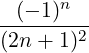
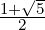
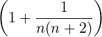

| Up | Next | Prev | PrevTail | Tail |
Every variable is named by an identifier, and is given a specific type. The type is of no concern to the ordinary user. Most variables are allowed to have the default type, called scalar. These can receive, as values, the representation of any ordinary algebraic expression. In the absence of such a value, they stand for themselves.
Several variables in REDUCE have particular properties which should not be changed by the user. These variables include:
Catalan’s constant, defined as
|
∑
n=0∞  . |
Intended to represent the base of the natural logarithms. log(e), if it occurs in an expression, is automatically replaced by 1. If rounded is on, e is replaced by the value of e to the current degree of floating point precision.
The number

.Intended to represent the square root of −1. i^2 is replaced by −1, and appropriately for higher powers of i. This applies only to the symbol i used on the top level, not as a formal parameter in a procedure, a local variable, nor in the context for i:= ....
in limit and power series calculations for example, as well as in definite integration. Note however that the current system does not do proper arithmetic on ∞. For example, infinity + infinity is 2*infinity.
Khinchin’s constant, defined as
|
∏
n=1∞  log 2 n. |
Used in the Roots package.
In REDUCE (algebraic mode only) taken as a synonym for zero. Therefore nil cannot be used as a variable.
Intended to represent the circular constant. With rounded on, it is replaced by the value of π to the current degree of floating point precision.
Used in the Roots package.
Must not be used as a formal parameter or local variable in procedures, since conflict arises with the symbolic mode meaning of t as true.
Other reserved variables, such as low_pow, described in other sections, are listed in Appendix A.
Using these reserved variables inappropriately will lead to errors.
There are also internal variables used by REDUCE that have similar restrictions. These usually have an asterisk in their names, so it is unlikely a casual user would use one. An example of such a variable is k!* used in the asymptotic command package.
Certain words are reserved in REDUCE. They may only be used in the manner intended. A list of these is given in the section “Reserved Identifiers”. There are, of course, an impossibly large number of such names to keep in mind. The reader may therefore want to make himself a copy of the list, deleting the names he doesn’t think he is likely to use by mistake.
| Up | Next | Prev | PrevTail | Front |